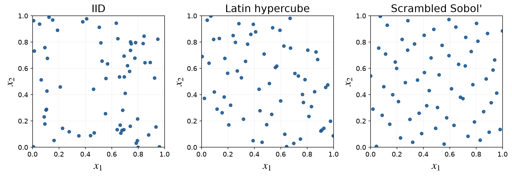

MATH 565 — Fall 2026
Improving Efficiency
September 2, 2026
Transformations and Importance Sampling

Estimation
Variance reduction
Estimation
Suppose
\[ \mu=\Ex[f(X)]=\Ex[g(X)], \qquad X\sim\Unif[0,1]^d \]
Both IID sample means are unbiased:
\[\begin{align*} \hmu_{f,n}&=\frac1n\sum_{i=0}^{n-1}f(X_i),& \hmu_{g,n}&=\frac1n\sum_{i=0}^{n-1}g(X_i) \end{align*}\]
Their mean squared errors are their variances:
\[\begin{align*} \var(\hmu_{f,n})&=\frac{\var\{f(X)\}}n,& \var(\hmu_{g,n})&=\frac{\var\{g(X)\}}n \end{align*}\]
Deck 01 showed that accepting some bias can reduce MSE. Here both estimators are unbiased, so an equivalent expectation is better when its integrand has smaller variance
The Keister example
Estimation
Consider
\[ \mu=\int_{\reals^d}\cos(\norm{t})\exp(-\norm{t}^2)\,\dif t \]
Let \(x_j=\Phi(at_j)\), where \(\Phi\) is the standard normal CDF
Then \(t_j=\Phi^{-1}(x_j)/a\) and
\[\begin{align*} \mu &=\int_{[0,1]^d}\frac{(2\mpi)^{d/2}}{a^d} \cos\!\left(\frac{\norm{\Phi^{-1}(x)}}a\right)\\ &\quad\times\exp\!\left[-\frac{2-a^2}{2a^2}\norm{\Phi^{-1}(x)}^2\right]\,\dif x, \qquad a^2\le2 \end{align*}\]
The parameter \(a\) creates a family of unbiased estimators with different variances
Transforming an integral
Estimation
To approximate \(\mu=\int_{\mathcal T}g(t)\,\dif t\), choose an invertible map
\[ t=\psi(x), \qquad \psi:\mathcal X\to\mathcal T \]
Let \(J(x;\psi)=\det\{\partial\psi_i/\partial x_j\}_{i,j=1}^d\)
If \(X\) has density \(\varrho_X\), then
\[\begin{align*} \mu &=\int_{\mathcal X}g\bigl(\psi(x)\bigr)\abs{J(x;\psi)}\,\dif x\\ &=\Ex_{X\sim\varrho_X}\!\left[ \frac{g\bigl(\psi(X)\bigr)\abs{J(X;\psi)}}{\varrho_X(X)} \right] \end{align*}\]
For \(X\sim\Unif[0,1]^d\), the density in the denominator is one
Transforming a random variable
(Quasi-)Random
Number Generation
Number Generation
Let \(\vZ\) have proposal density \(\varrho_{\mathrm{prop}}\) and define \(\vX=T(\vZ)\) for an invertible map \(T:\mathcal Z\to\mathcal X\)
The densities satisfy
\[\begin{align*} \varrho_{\mathrm{tar}}(\vx) &=\varrho_{\mathrm{prop}}\bigl(T^{-1}(\vx)\bigr) \left|\det\nabla T^{-1}(\vx)\right|,\\ \varrho_{\mathrm{tar}}\bigl(T(\vz)\bigr) &=\frac{\varrho_{\mathrm{prop}}(\vz)} {\left|\det\nabla T(\vz)\right|} \end{align*}\]
Therefore
\[ \Ex_{\mathrm{tar}}[f(\vX)] =\Ex_{\mathrm{prop}}[f\bigl(T(\vZ)\bigr)] \]
A change of variables in an integral and a transformation of a random variable are the same mechanism viewed from opposite directions
Transport makes importance weights constant
Estimation
For any invertible map \(T\),
\[\begin{align*} \mu &=\int f(\vx)\varrho_{\mathrm{tar}}(\vx)\,\dif \vx\\ &=\Ex_{\mathrm{prop}}\!\left[ f\bigl(T(\vZ)\bigr) \underbrace{ \frac{\varrho_{\mathrm{tar}}\bigl(T(\vZ)\bigr) \left|\det\nabla T(\vZ)\right|} {\varrho_{\mathrm{prop}}(\vZ)}}_{W_T(\vZ)} \right] \end{align*}\]
- Exact transport: choose \(T\) so that \(W_T(\vz)=1\) everywhere
- Importance sampling: choose \(T(\vz)=\vz\) and retain the varying weight \(W_T(\vz)=\varrho_{\mathrm{tar}}(\vz)/ \varrho_{\mathrm{prop}}(\vz)\)
Transport absorbs the density correction into the map; importance sampling carries the correction as a weight
Importance sampling
Estimation
Choose a proposal density \(\varrho_{\mathrm{prop}}\) that is positive wherever \(f\varrho_{\mathrm{tar}}\) is nonzero:
\[\begin{align*} \mu &=\int f(x)\varrho_{\mathrm{tar}}(x)\,\dif x\\ &=\Ex_{Z\sim\varrho_{\mathrm{prop}}}\!\left[ f(Z)\frac{\varrho_{\mathrm{tar}}(Z)} {\varrho_{\mathrm{prop}}(Z)} \right] \end{align*}\]
The ratio \(\varrho_{\mathrm{tar}}/\varrho_{\mathrm{prop}}\) is the importance weight
For \(Z_0,\ldots,Z_{n-1}\ \IIDsim\ \varrho_{\mathrm{prop}}\),
\[ \hmu_{\mathrm{IS},n} =\frac1n\sum_{i=0}^{n-1}f(Z_i) \frac{\varrho_{\mathrm{tar}}(Z_i)} {\varrho_{\mathrm{prop}}(Z_i)} \]
Brownian motion with drift
Quantitative
Finance
Finance
Positive option payoffs may be rare under a discretized Brownian path
Let \(X\sim\Norm(\vzero,\mSigma)\) with \(\Sigma_{jk}=\min(t_j,t_k)\) and target density \(\varrho_{\mathrm{tar}}\)
Use the proposal \(\Norm(\va,\mSigma)\) with density \(\varrho_{\mathrm{prop}}\) and
\[ \va=\theta(t_1,\ldots,t_d)^\mathsf T \]
The likelihood ratio simplifies to
\[ \frac{\varrho_{\mathrm{tar}}(x)}{\varrho_{\mathrm{prop}}(x)} =\exp\!\left(-\theta x_d+\frac{\theta^2t_d}{2}\right) \]
- Drift makes positive payoffs more common
- Importance weights compensate to preserve the target expectation
- A good drift can reduce estimator variance
Choosing a transformation
Estimation
- Variable transformation and importance sampling are intertwined
- The sampling density changes the variance of the sample mean
- Require
- a finite Jacobian determinant
- a proposal density that does not vanish where the integrand is nonzero
- Pilot samples can guide the choice of transformation or proposal
Place more samples where the magnitude of the integrand times the target density is large, without creating extreme weights
Control Variates and Conditioning
Probability
Estimation
Control variates
Estimation
Let \(\eta_1,\ldots,\eta_m\) have known zero means
For any coefficients \(\beta_1,\ldots,\beta_m\),
\[ \mu=\Ex[f(X)] =\Ex\!\left[f(X)-\sum_{j=1}^m\beta_j\eta_j(X)\right] \]
The estimator
\[ \hmu_{\mathrm{CV},n} =\frac1n\sum_{i=0}^{n-1}\left[f(X_i)-\sum_{j=1}^m\beta_j\eta_j(X_i)\right] \]
is unbiased for fixed \(\vbeta\)
Choose \(\vbeta\) to make
\[ \var\!\left[f(X)-\sum_{j=1}^m\beta_j\eta_j(X)\right] \]
as small as possible
Choosing coefficients by least squares
Estimation
Center the response and control values:
\[\begin{align*} y_i&=f(x_i)-\bar f,& H_{ij}&=\eta_j(x_i)-\bar\eta_j \end{align*}\]
Then
\[ \hvbeta=\argmin_{\vb}\norm{\vy-\mH\vb}^2 \]
When \(\mH^\mathsf T\mH\) is nonsingular,
\[ \hvbeta=(\mH^\mathsf T\mH)^{-1}\mH^\mathsf T\vy \]
The residual is orthogonal to the column space of \(\mH\), so least squares removes the component of \(f\) explained by the controls
Practical control-variate choices
Estimation
- Good controls are inexpensive, have known means, and are strongly related to \(f\)
- More controls can reduce the sample size needed for a target accuracy
- Poor controls may increase computation without reducing variance
- For IID sampling, least squares targets variance reduction
- For low discrepancy sampling, choose coefficients to reduce variation, not sampling variance
A control variate turns known expectations into information about an unknown expectation
Conditional Monte Carlo
Probability
Estimation
Recall
\[\begin{align*} \Ex(Y)&=\Ex_Z\{\Ex(Y\mid Z)\},\\ \var(Y)&=\Ex_Z\{\var(Y\mid Z)\}+\var_Z\{\Ex(Y\mid Z)\} \end{align*}\]
Therefore
\[ \var_Z\{\Ex(Y\mid Z)\}\le\var(Y) \]
If \(Y=f(X_1,\ldots,X_d)\) and
\[ g(X_{2:d})=\Ex(Y\mid X_{2:d}) \]
is analytic, estimate \(\mu\) by sampling \(g(X_{2:d})\) instead of \(Y\)
Analytically averaging over part of the randomness reduces variance
Conditional density estimation
Probability
Estimation
Let \(Y=f(X)\) with \(X\sim\Unif[0,1]^d\)
Suppose \(f\) is increasing in \(x_1\) and
\[ y=f(x_1,x_{2:d})iff x_1=g(y;x_{2:d}) \]
Then
\[\begin{align*} F_{Y\mid X_{2:d}}(y\mid x_{2:d}) &=\Prob\{X_1\le g(y;x_{2:d})\}\\ &=g(y;x_{2:d}),\\ \varrho_Y(y) &=\int_{[0,1]^{d-1}}\frac{\partial g}{\partial y}(y;x)\,\dif x \end{align*}\]
Thus a density value becomes an expectation of a conditional density
Density of a sum of uniforms
Practice
Let
\[ Y=\gamma_1X_1+\cdots+\gamma_dX_d, \qquad X\sim\Unif[0,1]^d, \qquad \gamma_j>0 \]
Solving for \(x_1\) gives
\[ g(y;x_{2:d})=\frac{y-\sum_{j=2}^d\gamma_jx_j}{\gamma_1} \]
when \(\sum_{j=2}^d\gamma_jx_j\le y\le\gamma_1+\sum_{j=2}^d\gamma_jx_j\)
Hence
\[ \varrho_Y(y)=\Ex\!\left[ \frac1{\gamma_1}\indic\!\left{ \sum_{j=2}^d\gamma_jX_j\le y\le \gamma_1+\sum_{j=2}^d\gamma_jX_j \right}\right] \]
Structured Random Sampling
Pseudorandom
Numbers
Numbers
Low
Discrepancy
Discrepancy
Antithetic sampling
Pseudorandom
Numbers
Numbers
Low
Discrepancy
Discrepancy
If \(T(X)\) has the same distribution as \(X\), pair \(f(X_i)\) with \(f\bigl(T(X_i)\bigr)\):
\[ \hmu_{\mathrm{Anti},n} =\frac1{2n}\sum_{i=0}^{n-1}\left[f(X_i)+f\bigl(T(X_i)\bigr)\right] \]
Examples:
\[\begin{align*} T(X)&=1-X,& X&\sim\Unif[0,1]^d,\\ T(X)&=-X,& X&\sim\Norm(\vzero,\mSigma) \end{align*}\]
Although \(X_i\) and \(T(X_i)\) are dependent, the pairs are independent across \(i\)
The variance is
\[ \var(\hmu_{\mathrm{Anti},n}) =\frac{\var\{f(X)\}}{2n} \left[1+\corr\{f(X),f(T(X))\}\right] \]
Antithetic sampling helps when the paired function values are negatively correlated
Constructing an antithetic variate
(Quasi-)Random
Number Generation
Number Generation
If \(X\) has continuous CDF \(F\), then
\[\begin{gather*} U=F(X)\sim\Unif[0,1],\\ 1-U\sim\Unif[0,1],\\ T(X)=F^{-1}\bigl(1-F(X)\bigr)\sim F \end{gather*}\]
For a symmetric distribution, this often reduces to reflection about the center
\(\exstar\) For which monotone functions \(f\) does \(f(X)\) become negatively correlated with \(f\bigl(T(X)\bigr)\)?
Latin hypercube sampling in one dimension
Pseudorandom
Numbers
Numbers
Low
Discrepancy
Discrepancy
Place one independent uniform point in each of \(n\) equal strata:
\[ X_i=\frac{i+U_i}{n}, \qquad U_i\ \IIDsim\ \Unif[0,1], \qquad i=0,\ldots,n-1 \]
Then \(X_i\sim\Unif[i/n,(i+1)/n]\) and
\[\begin{align*} \Ex(\hmu_{\mathrm{LHS},n}) &=\frac1n\sum_{i=0}^{n-1}\Ex\{f(X_i)\}\\ &=\sum_{i=0}^{n-1}\int_{i/n}^{(i+1)/n}f(x)\,\dif x\\ &=\int_0^1f(x)\,\dif x \end{align*}\]
The \(X_i\) are independent but not identically distributed
One-dimensional LHS variance
Estimation
Because the strata are independent,
\[ \var(\hmu_{\mathrm{LHS},n}) =\frac1{n^2}\sum_{i=0}^{n-1}\var\{f(X_i)\} \]
For differentiable \(f\), the mean value and Taylor theorems imply
\[\begin{align*} \var(\hmu_{\mathrm{LHS},n}) &\le\frac{\norm{f'}_\infty^2}{n^3},\\ \rmse(\hmu_{\mathrm{LHS},n}) &\le\frac{\norm{f'}_\infty}{n^{3/2}} \end{align*}\]
In one dimension, stratification can improve the IID \(n^{-1/2}\) RMSE rate to \(n^{-3/2}\) for smooth \(f\)
Latin hypercube sampling in \(d\) dimensions
Pseudorandom
Numbers
Numbers
Low
Discrepancy
Discrepancy
Let \(\pi_1,\ldots,\pi_d\) be independent random permutations of \(0,\ldots,n-1\):
\[ X_{i\ell}=\frac{\pi_\ell(i)+U_{i\ell}}n, \qquad U_{i\ell}\ \IIDsim\ \Unif[0,1] \]
Each coordinate uses every stratum exactly once
For \(R\) independent Latin hypercubes,
\[\begin{align*} \hmu_{\mathrm{LHS},n}^{(r)} &=\frac1n\sum_{i=0}^{n-1}f(X_i^{(r)}),\\ \hmu_{\mathrm{LHS},n,R} &=\frac1R\sum_{r=1}^R\hmu_{\mathrm{LHS},n}^{(r)},\\ \widehat{\var}(\hmu_{\mathrm{LHS},n,R}) &=\frac1{R(R-1)}\sum_{r=1}^R \left(\hmu_{\mathrm{LHS},n}^{(r)}-\hmu_{\mathrm{LHS},n,R}\right)^2 \end{align*}\]
Comparing random designs
Pseudorandom
Numbers
Numbers
Low
Discrepancy
Discrepancy
Each design has \(n=64\) points in \([0,1]^2\)
Strengths and limitations of LHS
Pseudorandom
Numbers
Numbers
Low
Discrepancy
Discrepancy
Strengths
- No importance density, control variate, or conditional expectation required
- Can converge faster than IID sampling
- Guarantees one point in every one-dimensional stratum
Limitations
- The sample size is fixed when the design is constructed
- Accuracy assessment requires independent replications
- Too many replications can erase the efficiency gain
- The one-dimensional \(n^{-3/2}\) RMSE guarantee does not extend automatically to \(d>1\)
Low Discrepancy Sampling
Low
Discrepancy
Discrepancy
Discrepancy
Measures
Measures
From LHS to quasi-Monte Carlo
Low
Discrepancy
Discrepancy
Discrepancy
Measures
Measures
Low discrepancy sampling, or quasi-Monte Carlo, improves space filling beyond one-dimensional stratification
For nodes \(x_0,\ldots,x_{n-1}\) and target distribution \(F\),
\[\begin{align*} D^2(\{x_i\}_{i=0}^{n-1},F;K) &=\int_{\mathcal X^2}K(x,x')\,\dif F(x)\,\dif F(x')\\ &\quad-\frac2n\sum_{i=0}^{n-1}\int_{\mathcal X}K(x,x_i)\,\dif F(x)\\ &\quad+\frac1{n^2}\sum_{i,j=0}^{n-1}K(x_i,x_j) \end{align*}\]
We usually take \(\mathcal X=[0,1]^d\) and seek nodes with small discrepancy
Three interpretations of discrepancy
Low
Discrepancy
Discrepancy
Discrepancy
Measures
Measures
For the uniform target on \([0,1]^d\), discrepancy is
worst-case error
\[ \left\lvert\int f(x)\,\dif x-\frac1n\sum_{i=0}^{n-1}f(x_i)\right\rvert \le D\norm{f}_{\mathcal H_K} \]
average-case root mean squared error for \(f\) drawn from a Gaussian process with covariance kernel \(K\)
distance between the target distribution and the empirical distribution
The kernel specifies the function class and the distributional features being measured
The van der Corput sequence
Low
Discrepancy
Discrepancy
Discrepancy
Measures
Measures
Write a nonnegative integer in base \(b\):
\[ i=(\cdots i_2i_1i_0)_b \]
Reverse the digits across the radix point:
\[ \phi_b(i)=(0.i_0i_1i_2\cdots)_b =\frac{i_0}b+\frac{i_1}{b^2}+\frac{i_2}{b^3}+\cdots \]
- Usually \(b\) is prime; \(b=2\) is common
- \(\{\phi_b(i)\}_{i=0}^{b^m-1}\) contains the same points as \(\{i/b^m\}_{i=0}^{b^m-1}\) in a different order
- Earlier points keep their order as the sample grows
The van der Corput construction turns a fixed-size grid into an extensible sequence
Four low discrepancy families
Low
Discrepancy
Discrepancy
Discrepancy
Measures
Measures
For \(i=0,1,\ldots\):
| Family | Construction | Typical preferred size |
|---|---|---|
| Kronecker | \(x_i=i\vzeta\bmod1\) | none |
| Lattice | \(x_i=\phi_b(i)\vzeta\bmod1\) | \(n=b^m\) |
| Halton | \(x_i=\{\phi_2(i),\phi_3(i),\phi_5(i),\ldots\}\) | none |
| Digital | \(x_i=i_0c_0\oplus i_1c_1\oplus\cdots\) | \(n=b^m\) |
Here \(\oplus\) denotes digitwise addition modulo \(b\)
Different families balance extensibility, projection quality, and fast construction
Component-by-component construction
Low
Discrepancy
Discrepancy
Discrepancy
Measures
Measures
Generators for lattice rules and digital nets may be chosen by number theory or computer search
The component-by-component strategy:
- Choose a one-dimensional generator that minimizes a discrepancy criterion over relevant sample sizes
- Freeze the first \(\ell\) components
- Search for component \(\ell+1\) that minimizes discrepancy
- Increase \(\ell\) and repeat until \(\ell=d\)
A high-dimensional design is built by optimizing one coordinate at a time
Randomized low discrepancy sampling
Low
Discrepancy
Discrepancy
Discrepancy
Measures
Measures
Randomization aims for
\[ X_{\mathrm{rand},i}\sim\Unif[0,1]^d \]
for every \(i\), while preserving low discrepancy jointly
- Random shift: \(X_{\mathrm{rand},i}=x_i+\vDelta\bmod1\), especially for lattices and Kronecker sequences
- Random digital shift: \(X_{\mathrm{rand},i}=x_i\oplus\vDelta\), especially for digital sequences
- Linear matrix or nested uniform scrambling, especially for digital sequences
Independent randomizations provide replications without reverting to IID point placement
Why randomize?
Statistics
Estimation
The estimator
\[ \hmu_n=\frac1n\sum_{i=0}^{n-1}f(X_{\mathrm{rand},i}) \]
is unbiased for \(\Ex[f(X)]\), \(X\sim\Unif[0,1]^d\)
Randomized nodes almost surely avoid the boundary, so Gaussian quantile transforms remain finite
Independent randomizations allow variance and error estimation
For smooth integrands, scrambled digital sequences can attain nearly \(\Order(n^{-3/2})\) RMSE
Randomization combines QMC space filling with Monte Carlo uncertainty quantification
Stopping criteria
Estimation
Two practical questions are
\[\begin{align*} \abs{\mu-\hmu_n}&\le\text{what?}\\ \abs{\mu-\hmu_n}&\le\varepsilon \quad\text{for what $n$?} \end{align*}\]
We want answers based only on the computed data \(f(x_0),f(x_1),\ldots\)
- IID sampling: use a Central Limit Theorem interval when justified
- Randomized low discrepancy sampling: use independent replications
- Deterministic low discrepancy sampling: possible criteria include
- decay of estimated Fourier coefficients
- Bayesian credible intervals based on a kernel model
An efficient method needs both fast error decay and a reliable stopping rule
Big Ideas
Probability
Statistics
Estimation
- Equivalent expectations can have dramatically different computational variance
- Exact transport chooses a map that makes the target-to-proposal correction constant; importance sampling retains the correction as unequal weights
- Importance proposals may be tailored to a particular integrand, while transported target samples can be reused for many integrands
- Control variates and conditioning remove variability using known structure
- Antithetic sampling and Latin hypercubes introduce useful dependence deliberately
- Low discrepancy sequences replace random clustering with balanced space filling
- Randomization restores unbiasedness and supports error estimation while retaining QMC efficiency